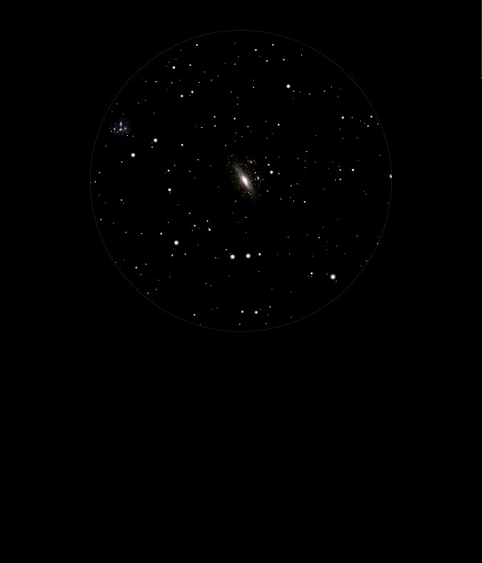

NGC 7331
Spiral
Galaxy in Pegasus
NGC 7331
Mag 9.5
Caldwell 30
21/09/14
A difficult to locate 9th Mag Galaxy due to it sitting in a
relatively sparse starfield but neat once located
Well defined oval blob but no sign of Mags 14 to 16 attendant
galaxies known as the 'Deer Lick Group'
02/10/15
A faint but distinct Spiral Galaxy with a hint of size even
though it is just a elongated smear in 12mm
However the Moon is just rising at 22:59 so the sky is
starting to wash out